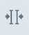
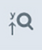

Die Symbolleiste bietet einen schnellen Zugriff auf die Funktionen zum Arbeiten mit dem Trace-Diagramm. Zu jedem Symbol ist ein Tooltip verfügbar, der auf seine Funktion hinweist. Bei deaktivierten Symbolen ändert sich auch der Tooltip-Text, der dann den Grund für die Inaktivität der Funktion nennt.
Die Symbole in der Symbolleiste sind nach Funktionen gruppiert, zwischen den Gruppen befindet sich jeweils ein größerer Abstand. Einander ausschließende Funktionen innerhalb einer Gruppe werden durch vertikale Linien getrennt.
| Hinweis |
|
Sie haben die Möglichkeit, die meisten Symbolleisten-Funktionen auch über das Kontextmenü der rechten Maustaste zu nutzen. |
Das Trace-Diagramm und das FFT-Diagramm haben unterschiedliche Symbolleisten. In der FFT-Symbolleiste werden bestimmte Symbole, die nur für das Trace-Diagramm relevant sind, nicht angezeigt, z. B. Trace starten/stoppen, oder Symbole zum Öffnen anderer Widgets.
In der folgenden Tabelle sind die Symbole und ihre Funktionen beschrieben:
Symbol in der Symbolleiste | Funktion |
|---|---|
| | Zoomen und Scrollen rückgängig machen (nur im Trace-Diagramm verfügbar, nicht bei FFT) |
| | Starten der Traceaufzeichnung |
| | Trace-Aufzeichnung stoppen (NC/PLC-Trace-Sitzung) oder Aufzeichnung abbrechen (Antriebs-Trace-Sitzung). Wird "Trace abbrechen" verwendet, werden vor dem Abbruch erfasste Messdaten nicht gespeichert. |
 | |
Skalierung für wiederholte Aufzeichnung mit derselben Trace-Konfiguration beibehalten | |
Alle vorhandenen Messcursor umschalten (EIN/AUS) (Das Symbol wird "gedrückt" angezeigt, wenn mindestens ein Cursor sichtbar ist.) | |
|  | Alle vorhandenen Messcursor im sichtbaren Zeitbereich platzieren (Ausgeblendete Cursor werden sichtbar gemacht.) |
Cursortabellen-Widget umschalten (EIN/AUS) (nur im Trace-Diagramm verfügbar, nicht bei FFT) | |
Bei gedrückter linker Maustaste (oder über Touch) kann das gesamte Trace-Diagramm verschoben werden. | |
Ein "Rechteck" kann im Trace-Diagramm bei gedrückter linker Maustaste aufgezogen werden. (Das "Rechteck" kann nicht mit Touchgesten aufgezogen werden. Stattdessen können Sie durch Zusammen- und Auseinanderziehen der Finger in die Anzeige herein- bzw. aus ihr herauszoomen.) | |
In beide Richtungen zoomen: Alle Zoomaktionen verändern die Anzeige sowohl in der Horizontalen als auch in der Vertikalen. | |
Horizontal zoomen: Alle Zoomaktionen betreffen nur die Horizontale. Bei Auswahl dieses Symbols wird das Symbol für "Nur das ausgewählte Signal zoomen" automatisch deaktiviert. | |
|  | Vertikal zoomen: Alle Zoomaktionen betreffen nur die Vertikale. |
Nur das ausgewählte Signal / die ausgewählte Signalgruppe zoomen Wenn das ausgewählte Signal (aktives Signal) zu einer Signalgruppe gehört, wird die ganze Gruppe zusammen gezoomt. | |
Alle Signale zoomen | |
Einen Schritt vergrößern | |
Einen Schritt verkleinern | |
Automatisch in der (den) ausgewählten Richtung(en) auf gesamten Bereich zoomen (100 %) | |
Sichtbare Signale in getrennten Spuren anordnen (Dies kann zu einer uneinheitlichen Skalierung von Signalgruppen führen.) | |
Das ausgewählte Signal um ein Pixel nach oben verschieben. Bei ununterbrochenem Drücken der Maustaste wird die Signalkurve kontinuierlich nach oben gescrollt. Wenn das ausgewählte Signal zu einer Signalgruppe gehört, wird die ganze Gruppe zusammen gescrollt. | |
Das ausgewählte Signal um ein Pixel nach unten verschieben. Bei ununterbrochenem Drücken der Maustaste wird die Signalkurve kontinuierlich nach unten gescrollt. Wenn das ausgewählte Signal zu einer Signalgruppe gehört, wird die ganze Gruppe zusammen gescrollt. | |
Legenden-Widget umschalten (EIN/AUS) | |
Signaltabelle umschalten (EIN/AUS) | |
Editor für mathematische Formeln umschalten (EIN/AUS) |